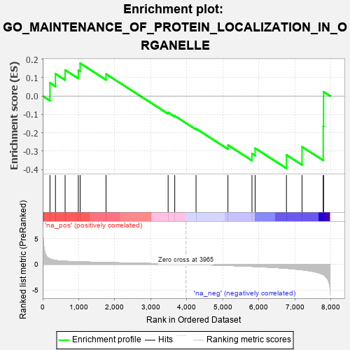
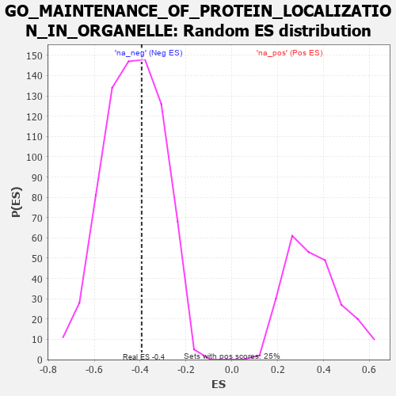

| | | Dataset | 7d |
| Phenotype | NoPhenotypeAvailable |
| Upregulated in class | na_neg |
| GeneSet | GO_MAINTENANCE_OF_PROTEIN_LOCALIZATION_IN_ORGANELLE |
| Enrichment Score (ES) | -0.3932926 |
| Normalized Enrichment Score (NES) | -0.91453147 |
| Nominal p-value | 0.5975936 |
| FDR q-value | 0.9389073 |
| FWER p-Value | 1.0 |
Table: GSEA Results Summary

Fig 1: Enrichment plot: GO_MAINTENANCE_OF_PROTEIN_LOCALIZATION_IN_ORGANELLE
Profile of the Running ES Score & Positions of GeneSet Members on the Rank Ordered List
| PROBE | GENE SYMBOL | GENE_TITLE | RANK IN GENE LIST | RANK METRIC SCORE | RUNNING ES | CORE ENRICHMENT | | 1 | BCL3 | | | 202 | 1.047 | 0.0711 | No |
| 2 | TAPT1 | | | 354 | 0.743 | 0.1206 | No |
| 3 | TAF8 | | | 622 | 0.587 | 0.1412 | No |
| 4 | TAF3 | | | 988 | 0.486 | 0.1401 | No |
| 5 | AKT1 | | | 1040 | 0.476 | 0.1775 | No |
| 6 | GPAA1 | | | 1757 | 0.344 | 0.1193 | No |
| 7 | CDK5 | | | 3480 | 0.080 | -0.0898 | No |
| 8 | SKP1 | | | 3663 | 0.049 | -0.1082 | No |
| 9 | ARL2 | | | 4254 | -0.050 | -0.1777 | No |
| 10 | RER1 | | | 5139 | -0.235 | -0.2671 | No |
| 11 | BBS4 | | | 5806 | -0.407 | -0.3133 | No |
| 12 | SUN2 | | | 5893 | -0.433 | -0.2842 | No |
| 13 | PDIA2 | | | 6762 | -0.792 | -0.3203 | Yes |
| 14 | TSPO | | | 7194 | -1.065 | -0.2763 | Yes |
| 15 | SYNE1 | | | 7782 | -2.011 | -0.1647 | Yes |
| 16 | GRIK5 | | | 7792 | -2.044 | 0.0225 | Yes |
Table: GSEA details [plain text format]

Fig 2: GO_MAINTENANCE_OF_PROTEIN_LOCALIZATION_IN_ORGANELLE: Random ES distribution
Gene set null distribution of ES for GO_MAINTENANCE_OF_PROTEIN_LOCALIZATION_IN_ORGANELLE